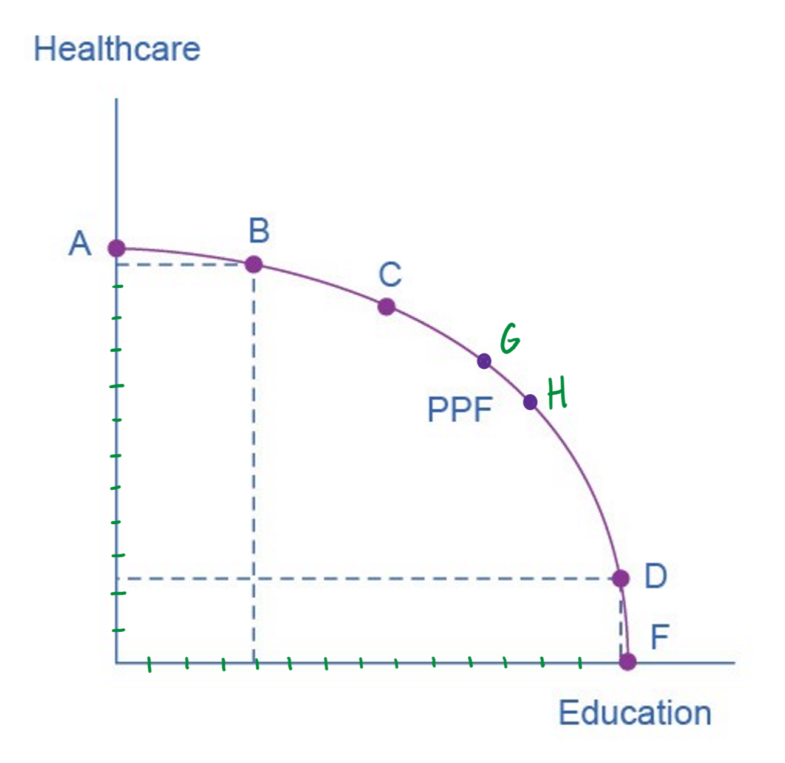

The production possibilities frontier
Just as individuals cannot have everything they want and must make choices, society as a whole cannot have everything that it wants either. This section will explain the constraints society faces using a model called the production possibilities frontier (or PPF).
Because society has limited resources (i.e., labor, land, capital, and entrepreneurship) at any point in time, there is a limit to the quantities of goods and services that it can produce. Suppose society desires two products, healthcare and education. Using all of its resources (responsibly—it’s not destroying the environment, using child labor, and so forth), the various combinations of these two goods that society can have are shown in figure 1.

In figure 1, healthcare is on the vertical axis and education is on the horizontal axis. If society allocates all of its resources to healthcare, it will achieve point A. This means, however, that it will not produce any education. Alternatively, if it allocates all of its resources to education, it will be at point F. Somewhat more sensibly, perhaps, society can also choose to produce any combination on the PPF that will give it both some healthcare and some education.
In effect, the production possibilities frontier plays the same role for society as the budget constraint plays for an individual. Society can choose any combination of the two goods on or inside the PPF. However, it does not have enough resources to produce outside (i.e., to the right of) the PPF.
Most importantly, the production possibilities frontier shows the trade-off between healthcare and education. Suppose society is at point B, but it wants to produce more education. Because the PPF is downward sloping from left to right, the only way that it can obtain more education is by giving up some healthcare. This is the trade-off that society faces.
Let’s say that society is thinking about shifting from point B to point C. If you study figure 1, you will see that a move from B to C entails an increase in education but a loss of healthcare. (Follow point B to the vertical and horizontal axes, and then do the same for point C.) What is the opportunity cost of the education that society will gain when it shifts from B to C? The opportunity cost is the healthcare it will have to give up. Just as with Sam’s budget constraint, the slope of the production possibilities frontier shows the opportunity costs of every possible choice.
The law of increasing opportunity cost
A budget constraint, which shows an individual’s options when selecting a combination of goods, is a straight line. This is because the slope of the line is determined by the relative prices of the two goods. No matter what combination of pizzas and burritos Sam consumes in a week, one pizza will always cost as much as two burritos. Hence, his budget constraint is a straight line with a slope of -2. The production possibilities frontier for healthcare and education in figure 1 is, however, a curved line (or, more specifically, it is concave).
To understand why the PPF is curved, we must start by making an important point: not every unit of resources (or every unit of money, let’s use $1,000,000 as our units) that is spent on producing a product—say, healthcare ore education—yields the same benefit. The first $1,000,000 spent on healthcare, for instance, will purchase the services of the best physicians who specialize in the most critical areas of healthcare, and they can be located where they are most needed. If society devotes all its resources to healthcare, however, the last $1,000,000 will be spent workers who aren’t well suited to working in healthcare and on services that aren’t very important for the health of members of society.

Consider point A in figure 2. At point A, all available resources are devoted to healthcare and none are left for education. This situation would be extreme and even ridiculous. (Children could be checked by doctors every day but wouldn’t be attending school. People could have all of the surgeries that they want, but there would be no high school or college education.) But let’s say that society is at point A and then decides to shift some of its resources from healthcare to education so that it will be at point B.
This shift won’t have much effect on the quality of the healthcare that is provided or on people’s health because, as just noted, when all resources (or all of the money for providing healthcare or education) are devoted to healthcare, the last several units won’t (and can’t) provide much benefit to society.
But moving these resources to education, which was completely without resources at point A, can produce relatively large gains. For this reason, the shape of the PPF between points A and B is relatively flat, representing a relatively small drop-off in healthcare and a relatively large gain in education. In other words, even though resources are being diverted away from healthcare, the amount of healthcare provided doesn’t drop off that much. At the same time, a few million dollars spent on education (when there was none before) can provide a lot of education—the best teachers, teaching the most important skills can now be put to work in this field.
So, on this part of the PPF, the opportunity cost of adding education is low. Some healthcare must be given up, but not much.
Meanwhile, the opposite of this situation exists at point F. If all resources are devoted to education, then shifting some resources to healthcare—so that society is at point D—won’t have much effect on the amount of education provided. It will, however, yield a large increase in the amount of healthcare. The cost (i.e., the opportunity cost) of adding some healthcare when society is at point F is low. Society doesn’t have to give up much education to get a large amount of healthcare.
The situation is different if we consider points G and H, which are close to the middle of the PPF. Here, society has about equal amounts healthcare and education. And given the shape of the PPF here, if we shift resources from education to healthcare, the amount of healthcare that is gained is about equal to the amount of education that is lost (or vice versa). So, although we can’t exactly read it off of the graph in figure 1, in the middle of the PPF, the cost of one unit of additional healthcare is about one unit of lost education (and vice versa).
Of course, even if it was possible, society is not likely to choose to devote all resources to healthcare or all to education and none to the other. The lesson here, however, is that the gains from committing additional resources to education depends on how many resources have already been devoted to it (and the same for healthcare). If on the one hand, very few resources are currently committed to education, then an increase in resources used for education can bring relatively large gains at a low cost (i.e., a low opportunity cost). On the other hand, if most resources are already committed to education, then committing additional resources will bring relatively smaller gains and at a high cost.
This pattern reflects the law of increasing opportunity cost: as the production of a good or service increases, the marginal opportunity cost of producing it (i.e., the cost of producing an additional unit) increases as well. This happens because some resources are better suited for producing certain goods and services instead of others, which in turn, is why the PPF has the shape that it does.
Productive and allocative efficiency
In a market-oriented economy with a democratic government, the choice of a point on a production possibilities frontier will involve a mixture of decisions by individuals, firms, and government. Economics, however, can show us that some choices are definitely better than others. This is based on the concept of efficiency. In everyday usage, efficiency refers to a lack of waste. The economic meaning is similar. In different contexts, it can be used in slightly different ways, but often it refers to a state where it is impossible to make one party (person, firm, country) better off without making another party worse off. So, a situation is inefficient when it is possible to make one party better off without making anyone else worse off.
The production possibilities frontier is used to investigate two specific kinds of efficiency: productive efficiency and allocative efficiency.

Productive efficiency is achieved when, given the available inputs and technology, it is impossible to produce more of one good without decreasing the quantity that is produced of another good. All combinations of the two goods on a PPF achieve productive efficiency—e.g., points A, B, C, D and F. If society moves from any one of these combinations to another, either healthcare increases and education decreases or vice versa.
A combination that is inside the production possibilities frontier is productively inefficient and wasteful because it is possible to produce more of one good without decreasing the amount of the other (or, it may be possible to produce more of both). For example, point R is productively inefficient because it is possible to either (1) increase the amount of healthcare produced without decreasing the amount of education (at point B), or (2) increase the amount of education without decreasing the amount of healthcare (at point D), or (3) increase the amounts of both (at point C).
Allocative efficiency is achieved when the combination being produced is the combination that society most desires.
Why society must choose
Every society faces the problem of scarcity. Limited resources will always conflict with unlimited needs and wants. But there are two situations that allow societies to expand the consumption of all goods. First, if a society discovers that it has not achieved productive efficiency, it can shift production of some or all goods to the production possibilities frontier. This will provide it with more of some or all goods.
Second, when resources grow over a period of years (e.g., the amount of labor and capital increases), the production possibilities frontier for a society will tend to shift outward and society will be able to have more of all goods.
Both of these, however, take time to discover and implement, and so the increases to production happen only gradually. Thus, in the present, a society must make tradeoffs. For government, this process often involves trying to identify where additional spending could do the most good and where reductions in spending would do the least harm. At the individual and firm level, the market economy coordinates a process in which firms seek to produce goods and services in the quantity, quality, and price that people want. However, for both the government and the market economy in the short term, increases in production of one good typically mean offsetting decreases somewhere else in the economy.